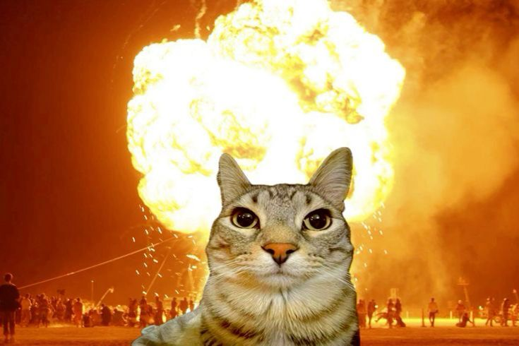

Thor
Cachorro dócil, vacinado e muito carinhoso.

Mimi
Gatinha curiosa, castrada e amigável.

Bento
Cheio de energia e pronto para brincar.

Luna
Tranquila, educada e muito carinhosa.
Adotar um animal é transformar vidas — a dele e a sua. Conheça alguns dos pets disponíveis para adoção abaixo.

Cachorro dócil, vacinado e muito carinhoso.
Gatinha curiosa, castrada e amigável.
Cheio de energia e pronto para brincar.
Tranquila, educada e muito carinhosa.